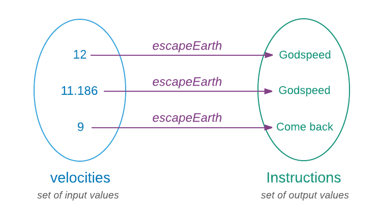
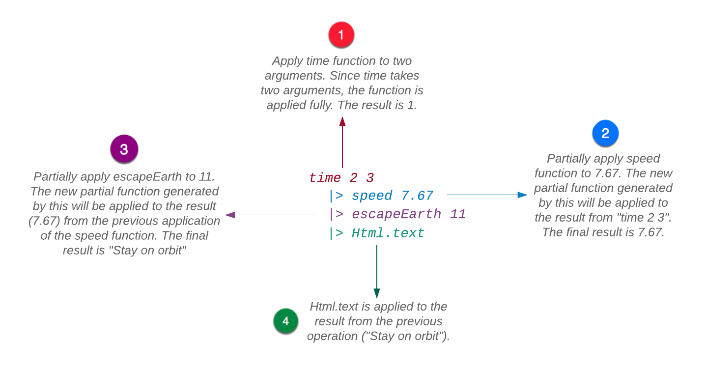

Staré dobré závody v kosmickém výzkumu jsou zpět. Nebylo by vynikající, kdybychom mohli některým z těchto ambiciózních společností vypomoci nabídkou našeho kódu pro zjišťování, zda jejich kosmická loď může opustit Zemi? Pro předání našeho know-how by byl nejlepší formát funkce, která zapouzdří naši logiku. Než tak učiníme, podívejme se, jak funkci definuje matematika.
Může vám být divné, proč se vracím k nádhernému světu matematiky pokaždé, když se pokouším vysvětlit nějaký koncept v Elmu. Je to proto, že Elm je funkcionální programovací jazyk, kladoucí velký důraz na matematické koncepce. Elm využívá matematické koncepty bez jejich překroucení. Takže pochopení jejich fungování v matematice usnadňuje jejich chápání v Elmu. To neznamená, že musíte mít silné zázemí v matematice abyste se mohli učit Elm. Vše, co potřebujete, je popsáno v této knize, včetně matematických konceptů.
Funkce v matematice je průmět množiny vstupů na množinu možných výstupů, kde každému vstupu odpovídá právě jeden výstup. Funkce v Elmu pracují stejným způsobem.

Napišme funkci, nazvanou escapeEarth, která přijímá hodnotu ze vstupní množiny rychlostí a mapuje ji na hodnotu z výstupní množiny instrukcí.
> escapeEarth velocity = \
| if velocity > 11.186 then \
| "Godspeed" \
| else \
| "Come back"
<function : Float -> String
>Můžeme nyní tuto funkci volat pro různé rychlosti abychom zjistili, zda může vesmírná loď opustit Zemi.
> escapeEarth 11.2
"Godspeed" : String
> escapeEarth 11
"Come back" : StringStejně jako u výrazu if, můžeme hodnotu vrácenou funkcí přiřadit konstantě.
> whatToDo = escapeEarth 11.2
"Godspeed" : String
> whatToDo
"Godspeed" : StringSkladba funkcí

Funkce jsou tak zásadní pro aplikace Elmu, že Elm disponuje neuvěřitelně přímočarou syntaxí pro jejich vytváření. Žádná ceremonie, jako speciální klíčové slovo nebo složené závorky, není zapotřebí.
Volání funkce
Při volání neboli aplikaci (neboli evokaci) funkce dosadíme konkretní hodnoty (neboli argumenty) za deklarované parametry. Příklad volání funkce jsme již viděli: escapeEarth 11. Při evokaci funkce oddělujeme název funkce od argumentů mezerou. Víceré argumenty se rovněž oddělují mezerou.
- Parametr vs Argument
- Termíny parameter a argument se často zaměňují, i když nejsou stejné a jejich záměnou se nezpůsobí škoda. Argument je označení pro konkretní hodnotu, kterou nahrazujeme deklarovaný parametr (např. escapeEarth
11), zatímco parametr je obecné označení očekávaného argumentu (např. escapeEarthvelocity).
V předchozím textu jsme se dověděli, že všechny aplikace Elmu jsou vytvořeny skloubením různých výrazů (expressions). Jak se do této organizační struktury řadí funkce? Funkce jsou hodnoty, stejně jako čísla a řetězce. Protože všechny hodnoty jsou výrazy, jsou i funkce výrazy. Z toho důvodu mohou být funkce vráceny jako výsledek výpočtu. Mohou být použity jako jako každá jiná hodnota. Můžeme je například zadat jiné funkci jako argument. Funkce, které přijímají jiné funkce jako argumenty nebo vracejí funkci, se nazývají funkce vyššího řádu. S mnoha příklady těchto funkcí se vbrzku seznámíme.
Funkce s více parametry
Výše uvedená funkce escapeEarth přijímá pouze jeden argument: velocity. Můžeme ji však vybavit tolika argumenty, kolik potřebujeme. Přidejme další parametr, aby nám funkce mohla odpovědět na otázku, zda naše horizontální rychlost je dostatečně velká abychom se udrželi na oběžné dráze.
Další kód, který si napíšeme, se obtížně zapisuje do replu bez toho, že se dopustíme chyb. Napíšeme si jej tedy do souboru. V kořenovém adresáři (beginning-elm) si vytvořte nový adresář elm-examples. Uvnitř tohoto adresáře vytvořte soubor s názvem Playground.elm. Tento soubor budeme používat pro experimentování s různými koncepty v Elmu. Dosud vytvářená adresářová struktura by mohla vypadat nějak takto:

- Název souboru
- Stylizační konvence Elmu přikazuje, aby byly názvy souborů psány rovněž stylem Camel Case. Na rozdíl od konstant má být první písmeno názvu souboru psáno velkým písmenem. První písmeno každého připojeného slova by rovněž mělo být psáno kapitálkou ale nebere se za chybu, pokud se tak neučiní.
Vložte následující kód do souboru Playground.elm.
module Playground exposing (..)
import Html
escapeEarth velocity speed =
if velocity > 11.186 then
"Godspeed"
else if speed == 7.67 then
"Stay in orbit"
else
"Come back"
main =
Html.text (escapeEarth 11.2 7.2)První řádek definuje nový modul zvaný Playground a druhý řádek importuje paket Html. Neznepokojujte se termíny module a import, popíšeme si je později. Dále je naše funkce escapeEarth. Přidáme ji další parametr zvaný speed. Není-li velocity větší než 11.186, použije se větev else if pro porovnání, zda speed je roven 7.67. Jestliže ano, vrací “Stay in orbit”. Jinak spadne do větve else.
Poslední funkcí je funkce main. Touto funkcí začíná provádění všech aplikací Elmu. Je to obyčejná funkce jako každá jiná. Výjimečná je tím, že je vstupním bodem aplikace. Volání funkce escapeEarth 11.2 7.2 dosadíme jako argument do importované funkce Html.text, která vracený řetězec zobrazí v prohlížeči.
Je důležité uzavřít escapeEarth a její argumenty do závorek. Jinak by si Elm mohl myslet, že zadáváme tři argumenty funkci Html.text, která však příjímá pouze jeden argument. Můžeme řetězit tolik funkcí, kolik potřebujeme.
Přejděte ve svém terminálu do adresáře beginning-elm a spusťte elm-reactor. Poté otevřete toto URL v prohlížeči: http://localhost:8000/. Měli byste uvidět elm-examples jako jeden z adresářů v sekci File Navigation. Klikněte na něj. Měl by se objevit soubor Playground.elm. Klikněte-li na něj také, elm-reactor jej zkompiluje a zobrazí výsledek v prohlížeči: "Godspeed".
Částečná aplikace funkce
Když jsme v předchozím textu aplikovali funkci escapeEarth, vycucali jsme si hodnotu rychlosti z prstu. Což kdyby byla také počítána nějakou další funkcí? Přidejte následující deklarace funkcí hned nad funkci main.
speed distance time =
distance / time
time startTime endTime =
endTime - startTime
main =
...Funkce speed má dva parametry: vzdálenost, překonanou kosmickou lodí a čas, potřebný pro překonání vzdálenosti. Tento čas je spočítán jinou funkcí, zvanou time. Pohleďte na pozměněný tvar funkce main poté, co jsme delegovali výpočet rychlosti na nově vytvořené funkce:
main =
Html.text (escapeEarth 11 (speed 7.67 (time 2 3)))Ajaj! Řetězení evokací je docela nevzhledné a obtížně čitelné. Což kdybychom přepsali funkci main do tohoto tvaru:
main =
time 2 3
|> speed 7.67
|> escapeEarth 11
|> Html.textMnohem lepší! Pro kompilaci tohoto nového kódu znovunačtěte (refresh) stránku na http://localhost:8000/elm-examples/Playground.elm. Měli by se zobrazit "Stay in orbit".
Úhledně formátovaný kód nahoře je možný, protože Elm podporuje částečnou aplikaci funkcí. Pohrejme si s několika příklady v replu pro poznání, jak se částečně aplikované funkce chovají. Vytvořte funkci zvanou "multiply" se dvěma parametry.
> multiply a b = a * b
<function>Když funkci použijeme pro dva parametry, dostaneme očekávaný výsledek.
> multiply 3 4
12Co když ale zadáme jenom první argument?
> multiply 3
<function>Hmm… Vrací funkci místo chybového hlášení. Uzavřemež tuto funkci do konstanty:
> multiplyByThree = multiply 3
<function>Pohleďme co se stane, když aplikujeme tuto mezilehlou funkci na druhý (finální) argument:
> multiplyByThree 4
12
> multiplyByThree 5
15MultiplyByThree je částečná (parciální) funkce. Když Elm vidí, že jsme nedodali funkci dost argumentů, tak místo naříkání aplikuje poskytnuté argumenty a vrací novou funkci, která může být volána později pro zbytek argumentů. To může mít praktické výhody. V dalších textech se setkáme s mnohými příklady volání parciální funkce.
Dopředná aplikace funkce
Vraťme se k onomu šikovnému operátoru |>, který naši funkci tak pěkně zpřehlednil. Nazývá se operátor dopředné aplikace funkce.
Je velmi užitečný pro eliminaci závorek. Napojuje (pipes) výsledek z předchozího výrazu na následující.

Operátor dopředné aplikace funkce vezme výsledek z předcházejícího výrazu a předá jej jako poslední argument následné evokace funkce. Na příklad, první výraz v řetězu nahoře (time 2 3) generuje číslo 1, které je jako výsledek zadáno funkci speed jako poslední argument.
Zpětná aplikace funkce
Existuje jiný operátor, který pracuje podobně jako |> ale v obráceném pořadí. Nazývá se operátor zpětné aplikace funkce a je reprezentován symbolem: <|. Odkloňme se trochu od naší ságy o kosmické lodi a vytvořme několik triviálních funkcí pro vyzkoušení tohoto operátoru. Zapište následující deklarace funkcí hned nad funkci main.
add a b =
a + b
multiply c d =
c * d
divide e f =
e / f
main =
...Funkce add, multiplya divide provádějí přesně to, co jejich názvy naznačují. Vytvořme výraz, který tyto funkce použije. Upravte funkci main takto:
main =
Html.text (toString (add 5 (multiply 10 (divide 30 10))))Uff. Ještě více závorek. Obnovte (refresh) stránku http://localhost:8000/elm-examples/Playground.elm a měli byste vidět 35. Funkce add vrací číslo avšak Html.text očekává string. Proto potřebujeme použít funkci toString abychom převedli číslo na řetězec. Tato funkce převede na řetězec jakýkoliv druh hodnoty.
> toString 42
"42"
> toString 7.8
"7.8"
> toString [5, 10]
"[5,10]"
> toString { a = 3, b = 6 }
"{ a = 3, b = 6 }"Použijme naši znalost operátoru |> pro transformaci zřetězeného výrazu ve funkci main na úhledný řetěz.
main =
divide 30 10
|> multiply 10
|> add 5
|> toString
|> Html.textK transformaci můžeme také použít operátor <|.
main =
Html.text <| toString <| add 5 <| multiply 10 <| divide 30 10Tento zápis zachovává původní řetězení funkcí bez závorek. Jeho bloková verze je rovněž přehledná:
main =
Html.text <|
toString <|
add 5 <|
multiply 10 <|
divide 30 10Začali jsme dopřednou evokací funkcí a skončili jsme zpětnou evokací, která je zřejmě výhodnější než dopředná. Protože v Elmu něco můžete, neznamená to, že byst měl. Pokud se cítíte jako v Bizarro World, kde dole je nahoře a nahoře je dole, užívejte si dopředné aplikace se znakem |>.
Elm používá další pomocné operátory pro funkce vyššího řádu, jako jsou tyto. Dozvíte se o nich více zde.
Operátory jsou také funkce
V Elmu se všechny výpočty uskutečňují prostřednictvím funkcí. Jak se věci mají, všechny operátory v Elm jsou rovněž funkce. Od normálních funkcí se liší třemi způsoby:
Pojmenování
Operátory nemohou mít ve svém označení písmena nebo číslice, zatímco normální funkce mohou. Označení +++ je v Elmu neplatným operátorem ale můžeme jej legitimizovat vlastní deklarací. Zapište následující deklaraci hned nad funkci main v souboru Playground.elm
(+++) first second =
first ++ second
main =
...Přisoudili jsme znaku +++ chování operátoru ++, který je již v Elmu definován. Operátor ++ se používá ke spojení dvou stringů. Všimněte si závorek v deklaraci nového operátoru. Musíme je použít při každé deklaraci uživatelského operátoru s použitím skladby funkce. Uživatelské operátory mají nejvyšší precedenci (9) a jsou asociativní zleva. Nový operátor +++ můžeme používat jako každý jiný operátor.
main =
Html.text ("Peanut butter " +++ "and jelly")Obnovíte-li stránku na http://localhost:8000/elm-examples/Playground.elm, měli byste vidět "Peanut butter and jelly". Vyzkoušejme co se stane, když k uživatelskému operátoru přidáme písmeno.
(+a+) first second =
first ++ second
main =
...Elm to nemá rád.

A co normální funkce? Můžeme k jejich jménu připojit speciální znak?
ad+d a b =
a + b
main =
...
Nope. Elm to rovněž nemá rád. Než se posuneme dál, měli byste odstranit neplatné deklarace operátorů a funkcí ze souboru Playground.elm.
Počet argumentů
Operátory přijímají pouze dva argumenty, zatímco počet argumentů normální funkce není omezen.
Způsob aplikace
Operátory se normálně píší mezi své argumenty. Tento způsob aplikace se nazývá infix-style.
> 2 + 5
7Normální funkce se volají zápisem názvu před argumenty. Tento způsob aplikace se nazývá prefix-style.
> add a b = a + b
<function>
> add 2 5
7Operátory lze rovněž použit prefixovým stylem, uzavřeme-li je do závorek:
> (+) 2 5
7Normální funkci infixovým stylem volat nelze ale můžeme vytvořit něco, co inficový styl připomíná, použitím |>:
> 2 |> add 5
7